Subsections
Figure 4.1:
Examples of inelasticity in subsurface applications.
|
Figure 4.2:
General equation of the yield surface.
|
Figure 4.3:
Tresca's yield surface.
|
Figure 4.4:
von Mises' yield surface.
|
Figure 4.5:
The friction coefficient.
|
Figure 4.6:
Intergranular friction, failure angle and maximum stress anisotropy.
 |
Figure 4.7:
Mohr Coulomb and Drucker Prager in various stress spaces.
 |
Figure 4.8:
Measurement of shear strength.
|
Figure 4.9:
The modified Lade criterion.
|
TBD
Figure 4.10:
Determination of plastic strains.
|
Figure 4.11:
Determination of plastic strains with Mohr-Coulomb associated flow rule.
|
Figure 4.12:
Determination of plastic strains with Mohr-Coulomb associated flow rule (continued).
|
Figure 4.13:
Non-associated flow rule - general concepts.
|
The following data set has experimental data of shear strength for the Darley Dale Sandstone measured in an axisymmetric triaxial cell.
Figure 4.14:
Peak stress measured from triaxial tests (image source: Jaeger et al. 2007 - FRM 4th Ed).
|
where  is the maximum total principal stress,
is the maximum total principal stress,  is the minimum total principal stress, and
is the pore pressure in the rock.
is the minimum total principal stress, and
is the pore pressure in the rock.
- Determine the best fitting parameters of a Coulomb criterion:
.
- Determine the corresponding values of cohesive strength
 and friction angle
and friction angle  from point (1) and draw the shear failure line together with Mohr circles at failure.
from point (1) and draw the shear failure line together with Mohr circles at failure.
- Determine the corresponding fitting parameters for a Drucker-Prager criterion and plot experimental data in a
 v.s.
space.
v.s.
space.
- Compute the corresponding tensile strength assuming a reasonable ratio of unconfined compression strength to tensile strength (browse Jaeger’s book).
For this assignment you have to be able to calculate principal stresses on the wall of a wellbore at an arbitrary deviation and azimuth (See Chapter 6 of my notes “Wellbore stability” (https://dnicolasespinoza.github.io/) and Zoback's book Ch. 8).
Develop a script to compute and illustrate graphically (lower hemisphere projection):
- The likelihood of tensile fractures considering wellbore mud pressure is equal to pore pressure in the formation and a simple tensile strength criterion (independent of intermediate and maximum principal stresses), i.e., required .
- The likelihood of breakouts considering wellbore mud pressure is equal to pore pressure in the formation and a simple unconfined compression strength criterion, i.e., required
 .
.
- The wellbore breakout angle
 considering a Mohr-Coulomb shear failure criterion and the properties of the Darley Dale Sandstone from Exercise 1.
considering a Mohr-Coulomb shear failure criterion and the properties of the Darley Dale Sandstone from Exercise 1.
- The wellbore breakout angle considering a linear v.s.
shear failure criterion and the properties of the Darley Dale Sandstone from Exercise 1.
- The wellbore breakout angle considering a Modified Lade shear failure criterion (Zoback's book, p. 100) and the properties of the Darley Dale Sandstone from point 1.
Limit your wellbore breakout angle plots to
because predictions with linear elasticity over
are likely highly inaccurate.
Test your script with the three examples given in Zobacks's book in Figures 8.2 and 10.4 (normal faulting, strike-slip faulting, and reverse faulting). When computing breakouts assume  = 32 MPa (NF), = 40 MPa (SSF), and = 52 MPa (RF). Use a Poisson ratio of 0.25 for stress calculations.
= 32 MPa (NF), = 40 MPa (SSF), and = 52 MPa (RF). Use a Poisson ratio of 0.25 for stress calculations.
Figure 4.15:
Wellbore stability results plotted as lower hemisphere projections (image source: Zoback 2013 - RG). Note:
in the figure above.
|
Figure 4.16:
Cam-clay - introduction.
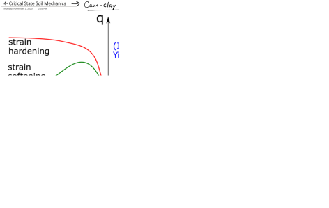 |
Figure 4.17:
The yield surface and effect of confinement for strain hardening and strain softening behavior.
|
Figure 4.18:
Slope of the critical state line.
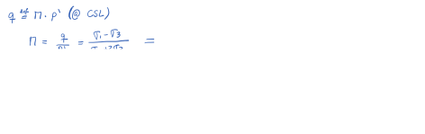 |
Figure 4.19:
The yield surface.
|
Figure 4.20:
Hardening as a function of volumetric plastic strain.
|
Figure 4.21:
Void ratio.
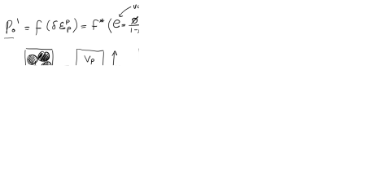 |
Figure 4.22:
Yield surface including void ratio.
 |
Figure 4.23:
Partition of elastic and plastic strain.
|
Figure 4.24:
The oedometer setup to measure elastic and plastic strain.
|
Figure 4.25:
Elastic and plastic non-linear volumetric strain.
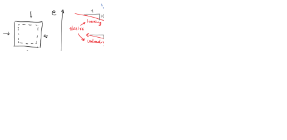 |
Figure 4.26:
Elastic stiffnes matrix.
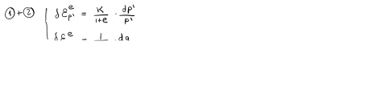 |
Figure 4.27:
Plastic strains from associated flow rule.
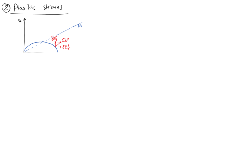 |
Figure 4.28:
Plastic stiffnes matrix.
|
Figure 4.29:
Strain localization as a result of strain softening.
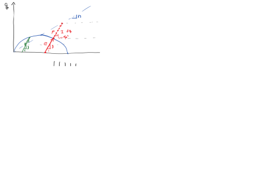 |
Figure 4.30:
Example of brittle to ductile transition.
|
Figure 4.31:
Effects of mean effective stress and temperature on brittle to ductile transition.
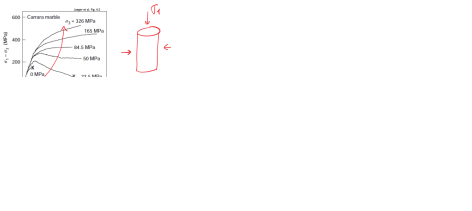 |
Figure 4.32:
Other influencing factors on brittle to ductile transition.
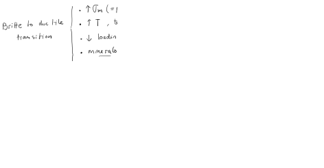 |
Figure 4.33:
Kinematic hardening and chemo-plasticity.
|
Figure 4.34:
Manifestations of time-dependent deformation.
|
The following data set contains well-logging measurements of porosity of a mudrock as a function of depth (Eugene Island – offshore Louisiana):
Figure 4.35:
Example of shale dis-equilibrium compaction evidenced by porosity deviation from the normal compaction trend (image source: Gordon and Flemings, 1998 https://doi.org/10.1046/j.1365-2117.1998.00052.x). Note about subplot 3: The x-axis “Shale Porosity” goes from 0.1 to 0.4 in logarithmic scale.
|
- Compute and plot pore pressure assuming a hypothetical hydrostatic pore pressure gradient = 0.465 psi/ft.
- Compute and plot total vertical stress assuming = 0.950 psi/ft and pick the seafloor from the shallowest data point in “percent sand” plot.
- Digitize shale porosity data (at least 20 equally spaced points) and fit an equation of porosity as a function of vertical effective stress from depth 400 m to 1800 m assuming hydrostatic pore pressure and models:
Exponential on porosity:
Logarithmic on void ratio:
Show the porosity-effective vertical stress and void ratio-effective vertical stress plots.
- Calculate and plot actual pore pressure between the interval 1800 m to 3400 m assuming porosity is a function of vertical effective stress with the models calculated in point 3.
- Calculate and plot overpressure parameter
 as a function of depth.
as a function of depth.
- Summarize all results with plots of
(Left) Porosity (model and data) in log scale as a function of depth (y-axis)
(Middle)  and actual
and actual  as a function of depth (y-axis)
as a function of depth (y-axis)
(Right) Overpressure parameter as a function of depth (y-axis)
Write a script that simulates a (axisymmetric) triaxial loading test (
) for a mudrock with the following properties:
- Elastic shear modulus,
 = 1 MPa;
= 1 MPa;
- Pre-consolidation stress, = 250 [kPa]
- Friction angle at critical state,
- Loading compressibility,
 = 0.25;
= 0.25;
- Unloading compressibility, = 0.05;
- Initial void ratio, = 1.15;
The initial state of stress is  = 200 kPa;
= 200 kPa;  = 0 kPa. Load the sample until the critical state.
= 0 kPa. Load the sample until the critical state.
- Plot the stress path versus . Plot the initial yield surface and the final yield surface. Is there hardening or softening?
- Plot as a function of
. Why does it approximate an asymptotic value?
- Plot void ratio as a function of (with in logarithmic scale). Why is there a clear change of slope?
- EXTRA: Repeat the exercise from the initial condition for a uniaxial-strain stress path approximated by
, up to
kPa). Plot the stress path versus and void ratio as a function of (with in logarithmic scale). Compare the uniaxial-strain stress-path with the triaxial deviatoric loading stress path.
Equations:
Incremental elastic deformations:
Incremental plastic deformation:
where
is the specific volume, , and
.
The incremental change of the yield surface is:
.